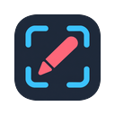
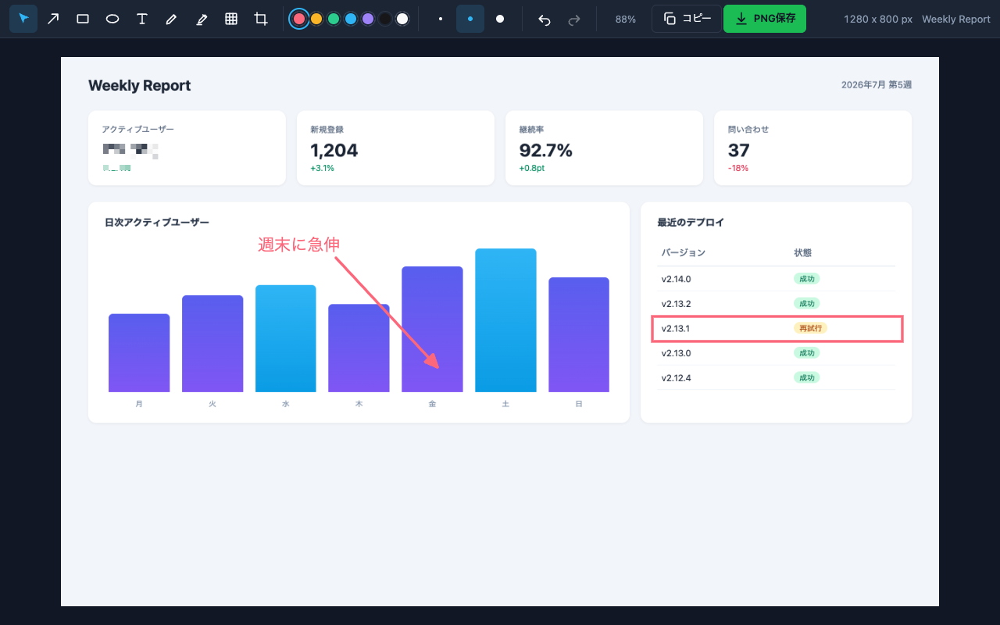

3 つの撮り方
用途に合わせて撮り方を選べます。少し待ってから撮る遅延（3 秒 / 5 秒）にも対応。
- いま見えている範囲をワンクリックで撮る
- ドラッグで囲んだ好きな範囲だけ撮る
- スクロールが必要な長いページを縦長 1 枚に

shotcraft は、いま見ている画面をそのまま撮って書き込めるスクリーンショット編集ツール。撮影から保存まですべてブラウザの中で完結し、画像がパソコンの外に送られることはありません。
無料・登録不要で使えます。

撮る・隠す・強調する・渡すを、画面を切り替えずにそのまま。
不具合を伝えるスクショに、矢印や囲みで印を付ける
名前やメールなど、見せたくない部分をサッと隠す
手順書づくりに、操作の順番の番号を振る
整えた画像をそのままコピーして、チャットや SNS に貼る
画面を撮ってから相手に渡すまで、タブを離れずにそのまま仕上げられます。
用途に合わせて撮り方を選べます。少し待ってから撮る遅延（3 秒 / 5 秒）にも対応。
矢印・四角・丸・テキスト・ペン・マーカーから、隠す・強調する専用ツールまでそろっています。
撮影・編集・保存のすべてがブラウザの中で完結。画像がパソコンの外に送られることはありません。
「送らない・残さない・余計なことをしない」を最初から徹底しています。
撮影も編集も保存も、すべてあなたのパソコンの中で行われます。撮った画像や書き込んだ内容が外部に送られることはありません。
拡張が求めるのは、いま開いているタブを撮るための最小限の許可だけ。閲覧履歴を集めたり、他のサイトを勝手に見たりはしません。
撮った画像や編集内容は一時的に保持するだけ。あなたが「保存」を選ばない限り、パソコンにファイルとして残ることはありません。